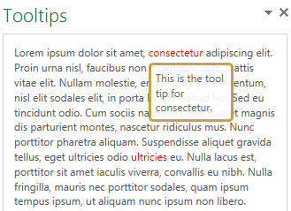
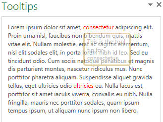

Figure 1 shows the workbook opened with a tooltip displayed.

Figure 2 shows the tooltip starting to fade from view.

The sample demonstrates how to perform the following tasks:
-
Use JavaScript to hide HTML elements in the task pane.
-
Retrieve the position of selected HTML elements in the task pane.
-
Use the Mouseover event to trigger the display of a tooltip.
-
Dynamically add style settings to HTML elements to display the tooltip at a particular location on the screen.
Prerequisites
This sample requires:
-
Visual Studio 2012.
-
Office Developer Tools for Visual Studio 2012.
-
Excel 2013.
Key components of the sample
The sample app contains the following components:
-
The Tooltips project, which contains the Tooltips.xml manifest file. The XML manifest file of an app for Office enables you to declaratively describe how the app should be activated when you install and use it with Office documents and applications.
-
The TooltipsWeb project, which contains multiple template files. However, the three files that have been developed as part of this sample solution include:
-
Tooltips.html (in the Pages folder). This file contains the HTML user interface that is displayed in the task pane when the app is started. The markup consists of a <div> element that contains the random text shown in the task pane. It also contains two <div> elements that have the IDs span_help_01 and span_help_02, each containing the tooltip text. Within the sample text are two <span> elements that have the IDs keyword01 and keyword02, encompassing the keywords that will be used to trigger the tooltips.
-
App.css (in the Styles folder). This cascading style sheet (CSS) contains the code that specifies the look of the tooltips, as shown in the following code.
#span_help_01, #span_help_02 { width: 25%; padding: 5px; background-color: white; border: 3px solid rgb(195,151,51); border-radius: 5px; }The CSS also contains the style code for each keyword that sets the font color to red.
#keyword01, #keyword02 { color: red; } -
Tooltips.js (in the Scripts folder). This script file contains code that runs when the task pane app is loaded. Specifically, the script consists of commands from the JavaScript JQuery library. This startup script first hides the two <div> elements that contain the tooltip text.
JavaScript $('#span_help_01').hide(); $('#span_help_02').hide();The script then determines the top and left positions of each keyword in the task pane by using the offset method and then stores those values in variables for later use.
JavaScript var tooltip01Position = $('#keyword01').offset(); var tooltip02Position = $('#keyword02').offset();The script file also includes the Mouseover event handlers for the two keywords in the Tooltips.html file. The following code shows the event handler for keyword01. The event handler for keyword02 is similar.
JavaScript $('#keyword01').mouseover(function () { // Show the tooltip at the specified position // and then slowly fade away. $('#span_help_01').show(); $('#span_help_01').css({ 'position': 'absolute', 'left': tooltip01Position.left, 'top': tooltip01Position.top + 20 }).fadeOut(4500);As the mouse moves over either of the keywords, the <div> element that contains the tooltip for that keyword is displayed. Next, CSS styling is dynamically added to that <div> element to cause the tooltip to display just below the keyword. This is accomplished by adding 20 to the coordinate of the keyword's top attribute value.
Finally, the FadeOut method is called to hide the tooltip by fading it to transparent. The number passed into the method is the duration, in milliseconds, of the animation. In this case, the number 4500 translates to 4.5 seconds. To give the reader more time to read the text, you may want to change this value to a longer delay if the tooltip contains more text than that used here.
-
All other files are automatically provided by the Visual Studio project template for apps for Office, and they have not been modified in the development of this sample app.
Configure the sample
To configure the sample, open the Tooltips.sln file with Visual Studio 2012. No other configuration is necessary.
Build the sample
To build the sample, choose Ctrl+Shift+B, or on the Build menu, choose Build Solution.
Run and test the sample
To run the sample, choose the F5 key. After the task pane is displayed in Excel 2013, move the mouse over the underlined consectetur keyword. A tooltip that is specific to that keyword is displayed just under the keyword. Notice that the tooltip starts to fade away after a few seconds. Move the mouse to the underlined ultricies keyword. A tooltip that is specific to that keyword is displayed and then starts to fade away after a few seconds.
Troubleshooting
If the app fails to install, ensure that the XML in your Tooltips.xml manifest file parses correctly. Also look for any errors in the JavaScript code that could keep the tooltips from being displayed. For example, you may have forgotten to end a statement with a semicolon, or you may have misspelled a method name or keyword. If the text in the task pane does not look as you think it should or if the tooltips are not displayed just below the keywords, check the CSS styles to ensure that you didn't forget a colon between the style and its value, or leave off a semicolon at the end of a style statement.
Change log
First release: April 29, 2013.